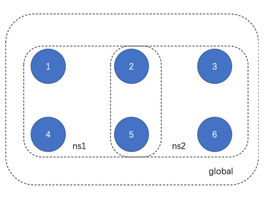
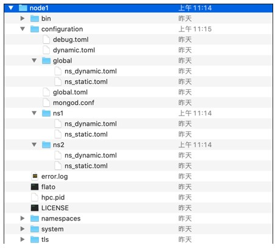

分区共识¶
功能概述¶
多分区架构如下图所示，使用时需遵循以下规则：
所有节点都必须在 global 这个namespace下；
任意四个及以上节点可以组成一个新的namespace；
在多namespace运行的情况下，某一个ns的宕机不影响其他ns运行；
但是如果global宕机，所有ns将一起停止。

使用说明¶
多分区的使用可以在节点启动时配置，也可以在启动后通过IPC命令进行动态增删。
节点启动配置¶
节点在启动前可以配置多个分区，配置后的目录结构如下

其中，global分区是必须存在的，且必须连接网络中的所有节点。在系统资源充足的情况下，其他分区的个数不做限制。每一个分区下的 ns_dynamic.toml 文件需要配置该分区下连接的节点。
[[nodes]]
hostname = "node1"
[[nodes]]
hostname = "node2"
[[nodes]]
hostname = "node3"
[[nodes]]
hostname = "node4"
此外，节点的 configuration/dynamic.toml 中需要加入其他分区
self = "node1"
[[namespace]]
name = "global"
start = true
[[namespace]]
name = "ns1"
start = true
[[namespace]]
name = "ns2"
start = true
start字段表示节点启动时是否启动该分区。如需全部启动，则将start均设置为true。
节点动态增删分区¶
节点在启动后，可以通过ipc命令增删分区。
namespace有4个子命令，分别用于 启动（start）、停止（stop）、删除（destroy）、列举（list）namespace。
namespace相关的ipc命令时针对节点级别的，启停namespace只影响该节点中的ns列表，而不会影响全局的ns列表。如果要在已有分区中增删节点，需要使用配置交易增删节点功能。
namespace start
命令 ： namespace start <namespace name>
启动一个namespace。启动的namespace需要保证还未在线上运行，且配置文件准备正确。
例子:
>>> namespace start ns1
Error: namespace exist
>>>
>>> namespace start ns2
successfully start namespace: "ns2"
>>>
namespace stop
命令：namespace stop <namespace name>
停止一个正在运行的namespace。
例子:
>>> namespace stop ns1
Error: namespace "ns1" is not running
>>> namespace stop ns2
successfully stop namespace "ns2"
namespace destroy
命令：namespace destroy <namespace name>
删除一个namespace下的所有数据。
例子:
>>> namespace destroy ns1
Error: namespace has not stopped
>>> namespace destroy ns2
successufully destroy namespace "ns2"
namespace list
命令：namespace list
列举目前正在运行的namespace。
例子:
>>> namespace list
global,ns1,ns2
使用示例¶
1. 节点运行过程中，某节点加入一个分区
该节点在configuration目录下建立一个该分区名对应的文件夹，放入配置好的ns_dynamic.toml和ns_static文件，使用ipc命令namespace start <namespace name>即可。
2. 节点运行过程中，某节点停止运行一个分区
该节点使用ipc命令namespace stop <namespace name>即可。
操作实例¶
节点启动¶
启动时node1、2、4、5配置global和ns1两个分区，node3、6仅配置global分区启动。
增加分区¶
node2、3、5、6在configuration文件夹下建立ns2文件夹，里面写入配置文件，通过ipc命令namespace start ns2新增分区ns2。
分区新增节点¶
如ns2分区增加4号节点。首先通过配置交易在ns2分区中申请加入node4。然后node4在configuration文件夹下建立ns2文件夹，里面写入配置文件，通过ipc命令namespace start ns2启动分区ns2。
接口参数说明¶
向节点发送交易的接口参数中有namespace字段，默认为global，若需要向其他分区发送请求，该字段填入分区名即可。例如:
// Request
curl -X POST --data '{"jsonrpc":"2.0","namespace":"ns2",
"method":"tx_sendTransaction","params":
[{"signature":"01047ea464762c333762d3be8a04536b22955d97231062442f81a3cff46cb009bbdbb0f30e61ade5705254d4e4e0c0745fb3ba69006d4b377f82ecec05ed094dbe873046022100b16176bc233000f9039a4209daa82a1c7bc662cbfe7cbef7b8ae44dc81043335022100e8f87fff65631726b3975a54c5c561b3277b6d60b2138cdd8281abc23dafd4f1","extra":"","from":"0x856E2B9A5FA82FD1B031D1FF6863864DBAC7995D","to":"0x794BF01AB3D37DF2D1EA1AA4E6F4A0E988F4DEA5","type":"EVM","nonce":8916188877127249,"simulate":false,"value":53,"timestamp":1566188957839922607}],"id":1}'
// Result
{
"jsonrpc": "2.0",
"namespace": "ns2",
"id": 1,
"code": 0,
"message": "SUCCESS",
"result": "0xed2ee1d92b7f99b69ca5b736e424f92d5118494d311b0c1efaa0f0941e1a4cca"
}
注意事项¶
节点的ipc命令只能控制节点自身的分区启停，并不能完成增删节点操作，增删节点需要通过配置交易完成。
当使用ipc命令退出global分区后，整个节点将退出。
分区退出后，dynamic.toml配置中分区的start值将改为false，若节点重启时需要启动该分区，请调整配置文件。
分区间彼此独立，但共享系统资源，若业务要求多分区架构，需要保证有更高的机器配置，可以考虑将节点各分区的数据挂载在不同磁盘下。